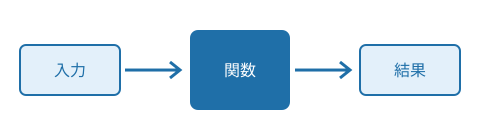

Python入門：関数
この教材では、同じ処理をまとめて何度でも使えるようにする「関数」の考え方と書き方を学びます。前の教材で学んだ変数と if 文を使います。
関数とは
関数は、ひとまとまりの処理に名前を付けたものです。名前を書くだけで、その処理を何度でも呼び出せます。
実はすでに関数を使っています。画面に文字を出す print や、文字列の長さを数える len は、Python にはじめから用意されている関数です。
print("こんにちは")
print(len("おはよう"))同じ手順を何か所にも書くと、直すときにすべてを書き換えなければなりません。関数にまとめておけば、直す場所は一か所で済みます。

関数の定義
自分で関数を作ることを「定義する」といいます。定義には def を使い、関数名のあとに丸括弧とコロンを書きます。
def greet():
print("こんにちは")
print("今日も学習を始めましょう")コロンの次の行から、字下げした部分が関数の中身です。字下げをやめたところで関数の定義は終わります。
定義しただけでは動かない
定義は「こういう手順です」と登録するだけで、その時点では何も起きません。動かすには、関数名に丸括弧を付けて呼び出します。
greet()
greet()2回呼び出せば、中身も2回実行されます。
名前の付け方
関数名は、何をする関数かが分かる動詞にすると読みやすくなります。たとえば show_score や count_words のように、単語を下線でつなぎます。
引数と戻り値
関数に値を渡すと、呼び出すたびに違う相手に対して同じ処理ができます。渡す値を受け取る変数を「引数」といいます。
def greet(name):
print(name + "さん、こんにちは")
greet("佐藤")
greet("田中")関数の中で計算した結果を呼び出し元に返すには return を使います。返された値を「戻り値」といいます。
def add(a, b):
return a + b
total = add(3, 4)
print(total)return を実行すると、関数はそこで終わります。return より後ろの行は実行されません。
関数を組み合わせる
関数の中から、別の関数を呼び出せます。小さな関数を組み合わせて、大きな処理を組み立てていくのがプログラムの基本です。
def average(scores):
return sum(scores) / len(scores)
def judge(scores):
if average(scores) >= 60:
return "合格"
return "不合格"
print(judge([70, 55, 80]))judge は平均の計算を average に任せています。平均の求め方を変えたくなったら、average だけを直せば済みます。
一つの関数には一つの仕事だけをさせると、名前が付けやすく、あとから読み返したときにも分かりやすくなります。